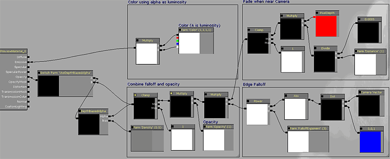
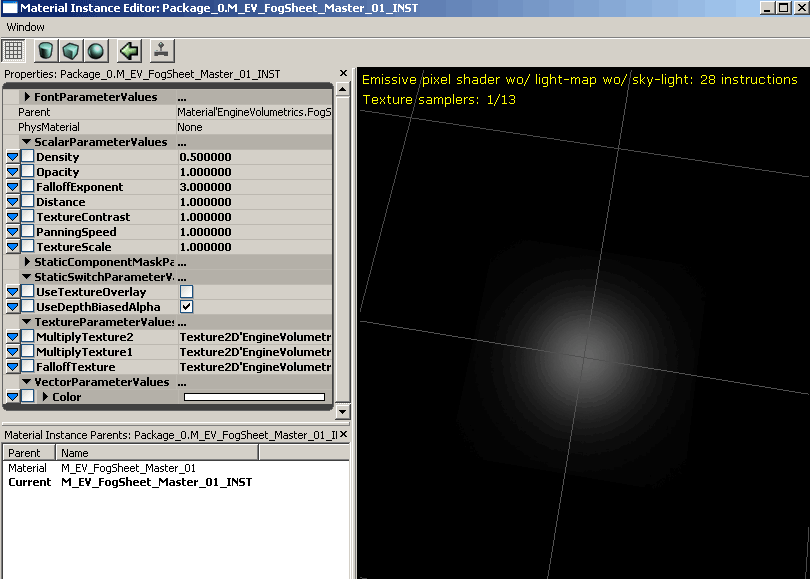
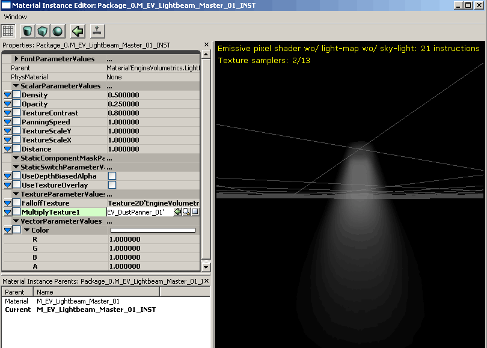

UDN
Search public documentation:
VolumetricLightingGuideCH
English Translation
日本語訳
한국어
Interested in the Unreal Engine?
Visit the Unreal Technology site.
Looking for jobs and company info?
Check out the Epic games site.
Questions about support via UDN?
Contact the UDN Staff
日本語訳
한국어
Interested in the Unreal Engine?
Visit the Unreal Technology site.
Looking for jobs and company info?
Check out the Epic games site.
Questions about support via UDN?
Contact the UDN Staff
测定体积光照指南
概述
包结构
- FalloffSpheres(衰减的球体)
- FogSheets(雾薄片)
- Lightbeams(光束)
- FogEnvironments(雾环境)
 正如您在图片中看到的，每种类型有两个组。每个组的材质和网格物体意味着需要配对一起使用。比如请不要尝试把一个fogsheet(雾薄片)的材质放置到lightbeam(光束)网格物体上。
正如您在图片中看到的，每种类型有两个组。每个组的材质和网格物体意味着需要配对一起使用。比如请不要尝试把一个fogsheet(雾薄片)的材质放置到lightbeam(光束)网格物体上。
原型
Falloffspheres、FogEnvironments、FogSheets 和 Lightbeams都有一些共同的东西： 它们的配对的静态网格物体都需要改变静态网格物体的属性，当您需要重复地不断进行这些设置时，是很烦人的。为了提高把它们放置到世界中的效率，创建了具有正确的actor属性预制的原型。每个测定体积图源类型有一个原型。它们都在’mesh(网格物体)’的子组中，并且它们的名称和它们所引用的这些网格物体的名称相对应。 要想获得关于Archetype(原型)更多的理解，请参照使用原型页面。 原型的优势是可以预制actor的属性，并且变化可以从引用的原型处进行传递。 这些信息供您参考，这里列出了原型已经设置的标志： CollisionType=COLLIDE_NoCollision bAcceptsDynamicLights=False bAcceptsLights=False bForceDirectLightmap=False bUsePrecomputedShadowing=False CastShadow=False bAcceptsDecals=False bAcceptsDecalsDuringGameplay=False bAcceptsFoliage=False bUseAsOccluder=False 仅有一个类别与这些设置相背离，即FogEnvironment的原型，它设置了DepthPriorityGroup=SDPG_Foreground并且bAllowCulldistanceVolume=False。
仅有一个类别与这些设置相背离，即FogEnvironment的原型，它设置了DepthPriorityGroup=SDPG_Foreground并且bAllowCulldistanceVolume=False。
把它们放置到世界中

创建实例
 为实例取一个名称，来简单地描述您打算使用这个实例做什么，以便当您稍后再浏览它时可以识别它。按照这种方式创建实例将会把它放置在您要将其放置到的关卡的包中。它也将会自动地为新创建的实例打开材质实例编辑器。
为了获取完整的说明材质实例，请参阅实例化的材质页面。
为实例取一个名称，来简单地描述您打算使用这个实例做什么，以便当您稍后再浏览它时可以识别它。按照这种方式创建实例将会把它放置在您要将其放置到的关卡的包中。它也将会自动地为新创建的实例打开材质实例编辑器。
为了获取完整的说明材质实例，请参阅实例化的材质页面。
测定体积类型
Falloff Spheres(衰减的球体)
一个衰减的球体是最简单的测定体积图元。它可以用于伪造一种从光源发出的微弱的闪光或者甚至光环效果。Parent Material（父项材质）
它有一个由于自发光的简单的颜色向量，并使用CameraVector 和 TangentVector(0,0,1)的Dot Product(点积)来隐藏边缘；当靠近相机时它也将使用像素深度进行淡出，所以您不会看到剪切。 它具有可选的depthbiasedblending(深度偏移混合) ，可以通过StaticSwitchParameter来切换。关于它的Usage(应用)在实例设置部分进行了解释。因为没有办法对一个球体进行无缝的贴图覆盖(至少没有使用很多重叠的样本)，所以对于贴图平移的覆盖图没有这个选项。
Instance Settings（实例设置）
这里是FalloffSpheres暴露的实例的完整列表：ScalarParameters（标量参数）:
Density(密度): 调整depthbiasedalpha的DepthBias(深度偏移)值。它仅当UseDepthBiasedAlpha的 SwitchParameter处于打开时才有效。 Opacity(不透明度): 使用它指定的值和光束的opacity(不透明度)输出端相乘。 FalloffExponent(衰减指数): 改变由点积(cameravector,tangentvector)给出的边缘衰减值。 Distance(距离): 控制在哪个距离时出现淡入淡出从而隐藏相机交叉点。StaticSwitchParameters
UseDepthBiasedAlpha: 默认值为OFF。当打开这项时，将会增加depthbiasedalpha，从而隐藏和世界及玩家的交叉点。消耗： 12个指令。VectorParameters（向量参数）
Color(颜色): Falloffsphere(衰减球体)的简单的自发光颜色。请记住Alpha控制亮度。
静态网格物体信息
网格物体是一个简单的具有圆柱体展开的UVs的球体图元。FogSheets(雾薄片)
FogSheets(雾薄片)实际上仅是应用了半透明材质的两个多边形薄片几何体。它们可以放置在任何环境中来创建前景和后景元素的距离分隔，或者创建孤立的一小团薄雾。通常，您不会希望在整个关卡中放置一个浓厚的高度雾，因为它可能会冲掉那些必须是黑暗的区域。您可以使用雾薄片来仅在您想放置它的地方获得浓密的雾。 当使用fogsheets(雾薄片)时可以通过突出主要区域来增加繁杂场景的清晰度。在下面的屏幕截图中的拱形的走廊里使用的fogsheet(雾薄片)将会把玩家引到那个方向。“跟随光源”。 战争机器中的某些FogSheets(雾薄片)应用实例： 应该适度地应用大的FogSheets(雾薄片)；并且必须避免邻近地把多个雾薄片堆叠到一起，因为这将导致很大的额外消耗。
应该适度地应用大的FogSheets(雾薄片)；并且必须避免邻近地把多个雾薄片堆叠到一起，因为这将导致很大的额外消耗。
Parent Material（父项材质）
fogsheets(雾薄片)的材质和FalloffSpheres(衰减球体)的材质非常类似。它有一个颜色参数depthbiasedalpha，还有一个panning texture overlay(平移贴图覆盖图)以便进行模糊地移动。
Instance Settings（实例设置）
这里是fogsheets(雾薄片)暴露的实例的完整列表：ScalarParameters（标量参数）:
Density(密度): 调整depthbiasedalpha的DepthBias(深度偏移)值。它仅当UseDepthBiasedAlpha的 SwitchParameter处于打开时才有效。 Opacity(不透明度): 使用它指定的值和光束的opacity(不透明度)输出端相乘。 FalloffExponent(衰减指数): 改变由点积(cameravector,tangentvector)给出的边缘衰减值。 Distance(距离): 控制在哪个距离时出现淡入淡出从而隐藏相机交叉点。 TextureContrast: 控制可选的平移贴图覆盖图的对比情况。设置它为0将会使得texture overlay = 1并且它是无意义的。设置它为1，将会使贴图在它为不变值处进行输出。仅当设置UseTextureOverlay开关参数为On时才有效。 PanningSpeed: 控制平移可选贴图覆盖图时它移动的速度。 TextureScale(贴图缩放比例): 控制可选贴图覆盖图的缩放比例。StaticSwitchParameters
UseDepthBiasedAlpha: 默认值为OFF。当打开这项时，将会增加depthbiasedalpha，从而隐藏和世界及玩家的交叉点。消耗： 12个指令。 UseTextureOverlay: 默认值为OFF。打开这项，将会向fogsheet(雾薄片)添加两个平移贴图，从而获得smokey motion(烟状运动)。消耗： 9个指令。TextureParameters（贴图参数）
MultiplyTexture1: 在可选贴图覆盖层中使用的第一个贴图。 MultiplyTexture2: 在可选贴图覆盖层中使用的第二个贴图。 FalloffTexture: 允许您覆盖在opacity(不透明性)中使用的贴图。默认是模糊地白色圆点贴图。VectorParameters（向量参数）
Color(颜色): Fogsheet(雾薄片)的简单的自发光颜色。请记住Alpha控制亮度。
静态网格物体信息
使用简单的具有一个单独的平面贴图的2个多边形平面网格物体。LightBeams(光束)
LightBeams(光束)是最常使用的测定体积图元。在UT上，我们使光束从最强的光源发出来吸引它们的注意力。Parent Material（父项材质）
LightBeams(光束)的材质是最复杂的测定体积类型的一种。当从多个角度查看它时，它必须处理衰减并必须仍然呈现出测定体积形状。为了达到这个效果，它使用网格物体的UV’s的Y坐标，而X坐标从反射向量产生。这允许材质按照相机沿着锥角坐标轴的方式向锥角映射一个衰减的贴图。然后它在结合另一种形式的球形衰减，从而防止从下面看时出现破坏的效果。 要想查看关于创建LightBeams(光束)材质及网格物体的全面解释，请参照[[VolumetricLightbeamTutorial] [测定体积光束指南]]页面。重新创建材质是学习这些测定体积如何工作的最好方法。
Instance Settings（实例设置）
这里是Lightbeams(光束)所暴露的实例的全面列表：ScalarParameters（标量参数）:
Density(密度): 调整depthbiasedalpha的DepthBias(深度偏移)值。它仅当UseDepthBiasedAlpha的 SwitchParameter处于打开时才有效。 Opacity(不透明度): 使用它指定的值和光束的opacity(不透明度)输出端相乘。 FalloffExponent(衰减指数): 改变由点积(cameravector,tangentvector)给出的边缘衰减值。 Distance(距离): 控制在哪个距离时出现淡入淡出从而隐藏相机交叉点。 TextureContrast: 控制可选的平移贴图覆盖图的对比情况。设置它为0将会使得texture overlay = 1并且它是无意义的。设置它为1，将会使贴图在它为不变值处进行输出。仅当设置UseTextureOverlay开关参数为On时才有效。 PanningSpeed: 控制平移可选贴图覆盖图时它移动的速度。 TextureScaleX: 控制可选贴图覆盖图的X方向的缩放比例。 TextureScaleY: 控制可选贴图覆盖图的Y方向的缩放比例。StaticSwitchParameters
TextureParameters（贴图参数）
MultiplyTexture1: 在可选贴图覆盖图中使用的贴图。 FalloffTexture: 允许您覆盖在opacity(不透明度)中使用的衰减贴图。它是一个使用光照特效过滤器在photoshop中渲染的圆锥形的贴图。VectorParameters（向量参数）
Color(颜色): 光束的简单的自发光颜色。请记住Alpha控制亮度。
静态网格物体信息
EngineVolumetrics包中已经有三个具有不同角度的圆锥体变种。要想获得更多的变种，创建一个具有锥形边缘的圆柱，然后展开它，以便在它的UV’s中只用一个缝隙。具有整洁的UV’s是很重要的，因为材质计算是在切线空间中完成的，不整洁的UV’s以后将会导致可见的失真。您的网格物体细分的越多，最终结果的衰减系数越平滑（16 面的圆柱分成 4 个垂直切片效果会很好）。 要想查看关于创建LightBeams(光束)材质及网格物体的全面解释，请参照[[VolumetricLightbeamTutorial] [测定体积光束指南]]页面。Fog Environments(雾环境)
雾环境和所有其它的测定体积雾是不同的。它是不带光照的半透明材质，渲染在前景DPG中，它可以替换高度雾。 请保守地使用它，并且仅当绝对地需要它是才使用，因为它将一直在整个屏幕上渲染一个遍半透明物。 它具有两个独立的半球体来在不同的侧面改变雾的颜色和不透明性。在虚幻竞技场３中，Epic使用这个技术使关卡的CTF Maps获得带颜色的雾。 要想使它工作，FogEnvironment(雾环境)网格物体必须在SDPG_Foreground的DepthPriorityGroup中。FogEnvironment原型中已经设置了这项，但是如果您没有使用原型，您需要自己设置它。 然后使用网格物体的Drawscale把网格物体按比例增大，并把它放置在满足它的边界盒扩展到超出玩家相机可以走到的任何区域的条件的地方。 注意，因为fogenvironments(雾环境)使用景深来进行它们的雾混合，它们不能像高度雾那样处理半透明物体，所以我们不推荐在具有很多半透明物体的关卡中使用雾环境。
注意，因为fogenvironments(雾环境)使用景深来进行它们的雾混合，它们不能像高度雾那样处理半透明物体，所以我们不推荐在具有很多半透明物体的关卡中使用雾环境。
Parent Material（父项材质）
FogEnvironments(雾环境)的材质使用网格物体的贴图坐标来生成半球体及进行高度混合。网格物体由多个UV坐标： 一个是自顶向下的平面贴图；另一个是侧平面贴图。独立地使用这些着色器构造需要的坐标值来进行混合。它也赋予您了对混合的控制。在实例部分对这些控制进行了精确的描述。
Instance Settings（实例设置）
这里是Lightbeams(光束)所暴露的实例的全面列表：ScalarParameters（标量参数）:
Falloff(衰减): 景深的衰减指数。用于改变雾堆积的快慢程度。 Density(密度): 设置雾环境的密度。值和高度雾的值类似。 StartDistance(开始距离): a允许您控制雾计算开始的距离。 BlendPower(混合幂数): 控制半球体混合的指数。和BlendOffset一同进行调整。 BlendOffset(混合偏移): 一个简单的偏移，用于控制半球体混合相交的位置。 Opacity1: 乘以第一个半球体的opacity(不透明度)。 Opacity2: 乘以第二个半球体的opacity(不透明度)。 HeightDensity(高度密度): 控制雾的垂直衰减的强度。 HeightOffset(高度偏移): 雾的高度衰减发生偏移的量。 SideDesaturation: 设置两个半球体之间交叉发生时的颜色冲淡量。常用于删除Red(红色)和Blue(蓝色)之间的中心变换点出现的令人厌恶的粉色；使用主要用途的情况是 –Red(红)和Blue(蓝队)之间的着色。 SideDesaturationPower: 控制冲淡颜色从半球体的交互点开始可以到达的距离。StaticSwitchParameters
UseSideDesaturation: 默认值为OFF。打开这项允许您移除在Red(红色)和Blue(蓝色)变换店中心发生的令人讨厌的粉红色；使用主要用途的情况是ctf地图。消耗： 11个指令。VectorParameters（向量参数）
Color1: 第一个半球体的简单的自发光颜色。请记住Alpha控制亮度。 Color2: 第二个半球体的简单的自发光颜色。请记住Alpha控制亮度。